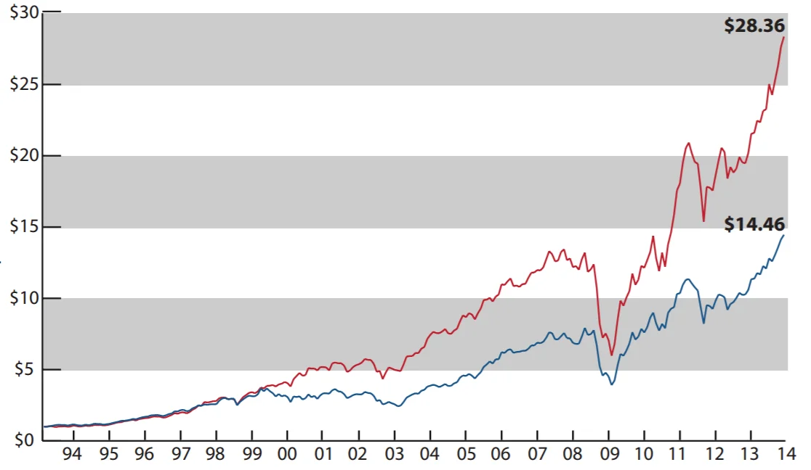
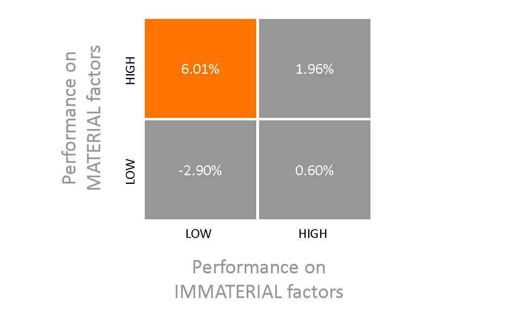
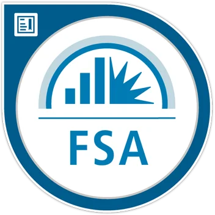

Materiality, Sustainability,
& ESG Consulting
We help organizations understand and report only on those sustainability factors that show evidence of financial Materiality.
In assets under management from PRI signatories – representing over 1,750 organizations from over 50 countries.
Materiality is at the Core
Advancing sustainability and ESG for both capital providers and corporations.
For Investors
Incorporate industry-specific ESG factors into analysis and valuation models, and enhance board/executive engagements with portfolio companies for long-term alpha generation.
For Companies
Avoid reporting fatigue, manage material ESG risks proactively, and establish more objective, value-driven communication with institutional investors and stakeholders.
What is Materiality?
Reporting on Sustainability is evolving out of tens of pages of narrative stories and into decision-useful, industry-specific accounting metrics.
The SEC (Securities and Exchange Commission) has defined Materiality as information "to which there is a substantial likelihood that a reasonable investor would attach importance in determining whether to buy or sell the securities registered." Under regulation S-K, the SEC requires reporting on these material factors.
The same ESG topic may be material for many sectors yet manifest differently across industries. For example, flood risks may affect supply chains for chip manufacturers, while affecting direct property costs for hotels and insurers. Mitigating these risks enhances brand reputation, potentially resulting in lower cost of capital, lower insurance rates, and increased customer loyalty.
"Sustainability is no longer a niche. It is about reducing risks and enhancing returns."
Value of $1 Invested in 1993

Firms with high performance on material issues (defined by SASB) significantly outperform low-performing peers over a 20-year period.
Stock Returns by Performance Type

Annualized alpha returns showing clear financial benefits of prioritizing material ESG performance compared to immaterial topics.
Our Services
Practical, strategic, and vendor-agnostic ESG solutions.
Sustainability & ESG Strategy
Is your team new to Sustainability (or refocusing ESG efforts)? Don't be overwhelmed by the hundreds of frameworks. We help you find the specific metrics that matter, conduct competitor benchmarking, and define a clear roadmap.
Vendor Due-Diligence & Support
Don't let the absence of a full-time ESG team halt critical projects. We serve as your Sustainability POC to screen, select, and manage third-party service providers (solar, lighting, waste, audits) for maximum ROI.
ESG Reporting Guidance
KPIs are essential – but are you providing the right context? We help construct appropriate Key Performance Narratives (KPNs) so investors, board members, and external stakeholders fully understand your ESG journey.

FSA Credential
Fundamentals of Sustainability Accounting (First cohort)
Carlos Solano
Physics/Math background applied to finding first principles in a company's value-creation model.
While conducting nanotechnology research at Yale University, I realized the urgency of adopting renewable technologies. This drove me to venture out of the lab and into the business world, earning an MBA and an Environmental Science Master's from Rice University in Houston, TX.
I have worked with large and small, public and private organizations such as the US Army, Shell, Waste Management, and TPG Capital. Despite progress, ESG continues to be undervalued. This is understandable as many projects under the generic banner of "Sustainability" have proven financially immaterial. The lens of financial Materiality formalizes sustainability into robust, risk-managed business policies.
Validation & Track Record
Carlos was an all-star sustainability professional at Gelson's (a TPG portfolio company). His actions engaged C-level executives, built a 5-year sustainability roadmap, and identified $2M+ in annual savings across waste, solar, and lighting vendor streams.
Carlos is a dedicated, resourceful, creative, and intelligent individual. He has a natural drive to excel, is very easy to work with, and is an excellent team member.
Let's do well – together.
Have questions about aligning your corporate initiatives with financial materiality? Contact us for a training session or a tailored ESG evaluation.